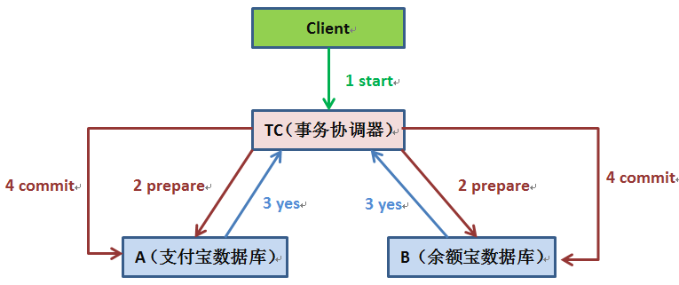

前阵子从支付宝转账10000元到余额宝，这是日常生活的一件普通小事，但作为互联网研发人员的职业病，我就思考支付宝扣除1万之后，如果系统挂掉怎么办，这时余额宝账户并没有增加10000，数据就会出现不一致状况了。这样的场景在各个类型的系统中都能找到相似的影子，比如在电商系统中，当有用户下单后，除了在订单表插入一条记录外，对应商品表的这个商品数量也必须减1；在搜索广告系统中，当用户点击某广告后，除了在点击事件表中增加一条记录外，还得去商家账户表中找到这个商家并扣除广告费等等，相信大家或多或多少都能碰到相似情景。这些问题本质上都可以抽象为当一个表数据更新后，怎么保证另一个表的数据也必须要更新成功的问题，也就是事务。
本地事务
事务是为了保证同一个事务中的操作同时成功或同时失败的一种机制。还是以支付宝转账余额宝为例，假设有支付宝账户表：A（id，userId，amount），余额宝账户表：B（id，userId，amount），用户的userId是1，那么可以将从支付宝转账1万块钱到余额宝的动作分为以下两步：
1）支付宝表扣除1万。
update A set amount = amount - 10000 where userId = 1;2）余额宝表增加1万。
update B set amount = amount + 10000 where userId = 1;如何确保支付宝余额宝收支平衡呢？有人说这个很简单嘛，可以用事务解决。
Begin transaction
update A set amount = amount - 10000 where userId = 1;
update B set amount = amount + 10000 where userId = 1;
End transaction
commit;非常正确！如果你使用Spring的话一个@Transaction注解就能搞定上述事务功能。
@Transactional(rollbackFor=Exception.class)
public void update() {
updateATable(); // 更新A表
updateBTable(); // 更新B表
}如果系统规模较小，数据表都在一个数据库实例上，上述本地事务方式可以很好地运行，但是如果系统规模较大，比如在上面的场景中，支付宝账户表和余额宝账户表显然不会在同一个数据库实例上，他们往往分布在不同的物理节点上，这时本地事务已经失去用武之地。
既然本地事务失效，分布式事务自然就登上舞台。
分布式事务—两阶段提交协议
两阶段提交协议（Two-phase Commit，2PC）经常被用来实现分布式事务。一般分为协调器C和若干事务执行者Si两种角色，这里的事务执行者就是具体的数据库，协调器可以和事务执行器在一台机器上。

1.我们的应用程序（client）发起一个开始请求到TC。
2.TC先将<prepare>消息写到本地日志，之后向所有的Si发起<prepare>消息。以支付宝转账到余额宝为例，TC给A的prepare消息是通知支付宝数据库相应账目扣款1w，TC给B的prepare消息是通知余额宝数据库相应账目增加1w。为什么在执行任务前需要先写本地日志，主要是为了故障后恢复用，本地日志起到现实生活中凭证的效果，如果没有本地日志（凭证），容易死无对证。
3.Si收到<prepare>消息后，执行具体本机事务，但不会进行commit，如果成功返回<yes>，不成功返回<no>。同理，返回前都应把要返回的消息写到日志里，当作凭证。
4.TC收集所有执行器返回的消息，如果所有执行器都返回yes，那么给所有执行器发生送commit消息，执行器收到commit后执行本地事务的commit操作；如果有任一个执行器返回no，那么给所有执行器发送abort消息，执行器收到abort消息后执行事务abort操作。
要注意的是，TC或Si把发送或接收到的消息先写到日志里，主要是为了故障后恢复用。如某一Si从故障中恢复后，先检查本机的日志，如果已收到<commit>，则提交，如果<abort>则回滚。如果是<yes>，则再向TC询问一下，确定下一步。如果什么都没有，则很可能在<prepare>阶段Si就崩溃了，因此需要回滚。
现如今实现基于两阶段提交的分布式事务也没那么困难了，如果使用Java，那么可以使用开源软件atomikos(http://www.atomikos.com/)来快速实现。
两阶段提交的缺点
只是但凡使用过的上述两阶段提交的同学都可以发现性能实在是太差，根本不适合高并发的系统。
1.两阶段提交涉及多次节点间的网络通信，通信时间太长。
2.事务时间相对于变长了，锁定的资源的时间也变长了，造成资源等待时间也增加很多。
正是由于分布式事务存在很严重的性能问题，大部分高并发服务都在避免使用，往往通过其他途径来解决数据一致性问题。
使用消息队列来避免分布式事务
如果仔细观察生活的话，生活的很多场景已经给了我们提示。比如现在去一些食店吃饭，是到一个窗口先点餐付钱，付钱的窗口给你一个凭证，然后你根据这个凭证到另一个窗口去取餐。这样的做法好处有很多，其中一个重要的好处就是能有效避免有的人吃了饭没有付钱，因为如果在取餐的窗口没有出示有效的凭证，是不会给你取餐的。
还是回到我们的问题，只要有这张凭证，你最终是能吃上你花钱买的饭的。同理转账服务也是如此，当支付宝账户扣除1万后，我们只要生成一个凭证（消息）即可，这个凭证（消息）上写着【让余额宝账户增加1W】，只要这个凭证（消息）能可靠保存，我们最终是可以拿着这个凭证（消息）让余额宝账户增加1万的，即我们能依靠这个凭证（消息）完成最终一致性。
可靠保存凭证（消息）
在上面的生活例子中，如果我们把取餐的凭证弄丢了，那么我们就吃不上花钱买的饭了。同理，如果【让余额宝账户增加1W】的这个凭证没有保存下来而被丢失，那么就会造成损失。因此保证能可靠地保存凭证也就尤为重要，主要有两种方法：
业务与消息耦合的方式
支付宝在完成扣款的同时，同时记录消息数据，这个消息数据与业务数据保存在同一数据库实例里（消息记录表表名为message）；
Begin transaction
update A set amount = amount - 10000 where userId = 1;
insert into message(userId, amount, status) values(1, 10000, 1);
End transaction
commit;上述事务能保证只要支付宝账户里被扣了钱，消息一定能保存下来。
当上述事务提交成功后，我们通过实时消息服务将此消息通知余额宝，余额宝处理成功后发送回复成功消息，支付宝收到回复后删除该条消息数据。
业务与消息解耦方式
上述保存消息的方式使得消息数据和业务数据紧耦合在一起，从架构上看不够优雅，而且容易诱发其他问题。为了解耦，可以采用以下方式。
1.支付宝在扣款事务提交之前，向实时消息服务请求发送消息，实时消息服务只记录消息数据，而不真正发送，只有消息发送成功后才会提交事务。
2.当支付宝扣款事务被提交成功后，向实时消息服务确认发送。只有在得到确认发送指令后，实时消息服务才真正发送该消息。
3.当支付宝扣款事务提交失败回滚后，向实时消息服务取消发送。在得到取消发送指令后，该消息将不会被发送。
4.对于那些未确认的消息或者取消的消息，需要有一个消息状态确认系统定时去支付宝系统查询这个消息的状态并进行更新。为什么需要这一步骤，举个例子：假设在第2步支付宝扣款事务被成功提交后，系统挂了，此时消息状态并未被更新为【确认发送】，从而导致消息不能被发送。
优点：消息数据独立存储，降低业务系统与消息系统间的耦合。
缺点：一次消息发送需要两次请求；业务处理服务需要实现消息状态回查接口。
消息重复投递的问题
还有一个很严重的问题就是消息重复投递，以我们支付宝转账到余额宝为例，如果相同的消息被重复投递两次，那么我们余额宝账户将会增加2w而不是1w了。
为什么相同的消息会被重复投递？比如余额宝处理完消息msg后，发送了处理成功的消息给支付宝，正常情况下支付宝应该要删除消息msg，但如果支付宝这时候悲剧的挂了，重启后一看消息msg还在，就会继续发送消息msg。
解决方法很简单，在余额宝这边增加消息应用状态表（message_apply），通俗来说就是个账本，用于记录消息的消费情况，每次来一个消息，在真正执行之前，先去消息应用状态表中查询一遍，如果找到说明是重复消息，丢弃即可，如果没找到才执行，同时插入到消息应用状态表（同一事务）。
for each msg in queue
Begin transaction
select count(*) as cnt from message_apply where msg_id = msg.msg_id;
if cnt == 0 then
update B set amount = amount + 10000 where userId = 1;
insert into message_apply(msg_id) values(msg.msg_id);
End transaction
commit;Ebay的研发人员早在2008年就提出了应用消息状态确认表来解决消息重复投递的问题：http://queue.acm.org/detail.cfm?id=1394128。
"世间所有的相遇都是久别重逢，而你没有如期归来，这正是离别的意义。"